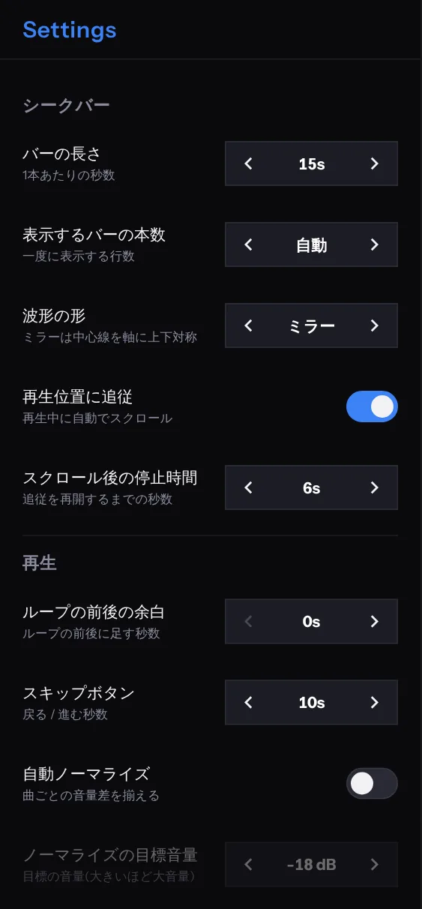

REFERENCE
設定・ショートカット・困ったとき
設定項目、ショートカット、よくある質問です。
Settings の項目

| セクション | 項目 | 内容 |
|---|---|---|
| シークバー | バーの長さ | 1 本あたりの秒数です（5、10、15、20、25、30、45、60 秒）。 |
| 表示するバーの本数 | 一度に表示する行数です（自動、3、4、5、6、8）。 | |
| 波形の形 | ミラー（中心線を軸に上下対称）か、下揃えです。 | |
| 再生位置に追従 | 再生中に、画面を自動でスクロールします。 | |
| スクロール後の停止時間 | 自分でスクロールしたあと、追従を再開するまでの秒数です。 | |
| 再生 | ループの前後の余白 | ループの前後に足す秒数です（0〜5 秒）。 |
| スキップボタン | 戻る・進むの秒数です（5、10、15、30、60 秒）。 | |
| 速度の刻み | 速度の −・＋ ボタンの刻みです（1、2、5、10 %）。 | |
| 自動ノーマライズ | 曲ごとの音量の差をそろえます。初期状態は OFF です。ON にすると、目標の音量も選べます。 | |
| 一般 | 言語 | 画面の表示言語です（自動、日本語、English）。 |
| More | バックアップ ／ インポート | 保存・バックアップ・同期を見てください。 |
| カラー | テーマ色の変更です。「現在の色を光らせる」で、現在の色がゆっくり明滅します。マーカーメモの名前と色もここで変えます。 | |
| キーボード | ショートカットの一覧です。 | |
| 転送 | MP3 を端末間で送ります（同期の対象のアカウントのみ）。 |
設定の値は、「‹ 値 ›」の矢印で切り替えます。設定は端末ごとに保存されます。
キーボードショートカット
| キー | 操作 |
|---|---|
| Space | 再生 / 一時停止 |
| Enter | 先頭へ移動 |
| P / M | マーカーを追加 |
| L | ループ ON/OFF |
| R | リピート |
| 1 〜 9 | 番号のマーカーへジャンプ |
| Ctrl + 1 〜 9 | マーカーの ON/OFF |
| → / ← | 次・前のマーカー |
| ↑ / ↓ | 最初・最後のマーカー |
| Ctrl + → / ← | 速度 +1% / −1% |
| Ctrl + ↑ / ↓ | キー +1 / −1 半音 |
| Ctrl + R | 速度とキーをリセット |
この一覧は、Settings の「キーボード」でも確認できます。アプリを開いている間は、そのアプリのショートカットに切り替わります。
困ったときは
| 症状 | 確認してみてください |
|---|---|
| 音が出ない・再生できない | ファイルの形式が、お使いのブラウザに対応しているか確認してください。スマートフォンでは、Play ボタンをタップして開始します。本体の音量とマナーモードも確認してください。 |
| 速度やキーを触ると「無料版では…」と出る | 無料版の制限です。無料版とPremiumを見てください。 |
| 「このブラウザではキー変更を使えません」と出る | お使いのブラウザが AudioWorklet に対応していません。新しいバージョンのブラウザでお試しください。 |
| マーカーが 4 個目から効かない | 無料版では、曲あたり先頭 3 個までが有効です。 |
| 曲やマーカーが消えた | ブラウザのサイトデータを消していないか、別のブラウザで開いていないか確認してください。バックアップがあれば、インポートで戻せます。 |
| 別の端末に曲が出てこない | 音声ファイル本体は同期されません。Library 下部の「未インポート」を確認して、転送（Transfer）で受け取ってください。 |
| 同期の表示が赤い | ログイン状態と通信を確認して、表示をタップしてやり直してください。 |
| 転送で「接続できませんでした」と出る | 両方の端末でアプリを開いたままにして、同じ Wi-Fi でお試しください。コードは数分で期限切れになるので、やり直すときは送信から始めます。 |
| 画面をロックすると音が止まる | バックグラウンド再生の可否は、OS とブラウザによります。特に iPhone では止まりやすいです。 |
解決しないときは、アプリを再読み込みしてお試しください。
規約とポリシー
利用規約とプライバシーポリシーは、Settings の最下段にあるリンクから開けます。お問い合わせは、各ページに記載のメールアドレスで受け付けています。